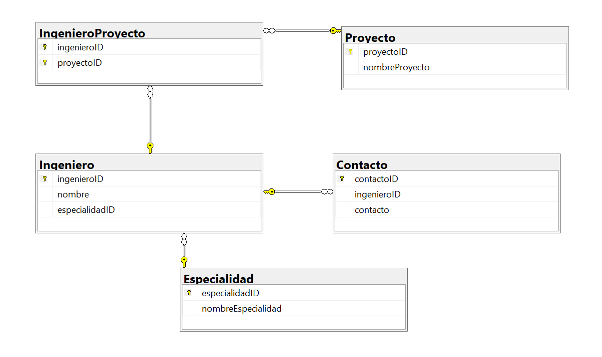

Diagrama de Base de Datos - Ingenieros Especialistas
El diagrama muestra las relaciones entre las tablas: Especialidad, Ingeniero, Proyecto, IngenieroProyecto y Contacto.
Tabla Especialidad
Propósito: Almacena las áreas de especialización de los ingenieros especialistas, permitiendo clasificar a los ingenieros según su competencia para asignación de proyectos.
- especialidadID: Clave primaria única que identifica cada especialidad.
- nombreEspecialidad: Nombre descriptivo de la especialidad (Ej. Eléctrico, Mecánico, Hidráulico).
Tabla Ingeniero
Propósito: Almacena la información de cada ingeniero especialista registrado en la constructora, incluyendo identidad y especialidad.
- ingenieroID: Clave primaria única que identifica a cada ingeniero.
- nombre: Nombre completo del ingeniero.
- especialidadID: Clave foránea que relaciona al ingeniero con su especialidad.
Tabla Proyecto
Propósito: Registra todos los proyectos de la constructora, permitiendo planificar, asignar y dar seguimiento a los ingenieros asignados.
- proyectoID: Clave primaria única que identifica cada proyecto.
- nombreProyecto: Nombre descriptivo del proyecto.
Tabla IngenieroProyecto
Propósito: Gestiona la relación muchos a muchos entre ingenieros y proyectos, permitiendo asignar varios ingenieros a un proyecto y un ingeniero a varios proyectos.
- ingenieroID: Clave foránea al ingeniero.
- proyectoID: Clave foránea al proyecto.
- Clave primaria compuesta (ingenieroID, proyectoID): Asegura unicidad en cada asignación.
Tabla Contacto
Propósito: Almacena los contactos de cada ingeniero, permitiendo comunicación directa con clientes, supervisores u otros miembros del equipo.
- contactoID: Clave primaria única que identifica cada contacto.
- ingenieroID: Clave foránea que vincula el contacto al ingeniero correspondiente.
- contacto: Información de contacto (correo, teléfono u otro medio).
Normalización de la Base de Datos
1NF (Primera Forma Normal)
Todas las tablas tienen clave primaria única y campos atómicos. Ejemplo:
- Especialidad:
nombreEspecialidades un valor único por fila. - Ingeniero:
nombreyespecialidadIDson valores individuales.
2NF (Segunda Forma Normal)
Todos los atributos dependen completamente de la clave primaria de cada tabla. Ejemplo:
- Ingeniero:
nombredepende totalmente deingenieroID. - IngenieroProyecto: La combinación
(ingenieroID, proyectoID)asegura dependencia total de la clave compuesta.
3NF (Tercera Forma Normal)
No existen dependencias transitivas entre atributos no clave. Ejemplo:
- Contacto:
contactodepende solo decontactoIDy está vinculado a un ingeniero medianteingenieroID. - Ingeniero:
nombreyespecialidadIDdependen únicamente deingenieroID.
Script SQL del Subsistema
A continuación se muestra el script SQL utilizado para crear la base de datos de Ingenieros Especialistas:
CREATE DATABASE Constructora;
GO
USE Constructora;
GO
-- ==========================
-- Tabla de Especialidades
-- ==========================
CREATE TABLE Especialidad (
especialidadID INT IDENTITY PRIMARY KEY,
nombreEspecialidad VARCHAR(50) NOT NULL
);
INSERT INTO Especialidad (nombreEspecialidad)
VALUES ('Eléctrico'), ('Mecánico'), ('Hidráulico');
-- ==========================
-- Tabla de Ingenieros
-- ==========================
CREATE TABLE Ingeniero (
ingenieroID INT IDENTITY PRIMARY KEY,
nombre VARCHAR(100) NOT NULL,
especialidadID INT NOT NULL,
FOREIGN KEY (especialidadID) REFERENCES Especialidad(especialidadID)
);
-- ==========================
-- Tabla de Proyectos
-- ==========================
CREATE TABLE Proyecto (
proyectoID INT IDENTITY PRIMARY KEY,
nombreProyecto VARCHAR(100) NOT NULL
);
CREATE TABLE IngenieroProyecto (
ingenieroID INT NOT NULL,
proyectoID INT NOT NULL,
PRIMARY KEY (ingenieroID, proyectoID),
FOREIGN KEY (ingenieroID) REFERENCES Ingeniero(ingenieroID),
FOREIGN KEY (proyectoID) REFERENCES Proyecto(proyectoID)
);
-- ==========================
-- Tabla de Contactos
-- ==========================
CREATE TABLE Contacto (
contactoID INT IDENTITY PRIMARY KEY,
ingenieroID INT NOT NULL,
contacto VARCHAR(100) NOT NULL,
FOREIGN KEY (ingenieroID) REFERENCES Ingeniero(ingenieroID)
);
Script de Inserción de Registros
A continuación se muestran los scripts SQL para generar 10 registros de ejemplo para cada tabla:
Tabla Especialidad
INSERT INTO Especialidad (nombreEspecialidad) VALUES
('Eléctrico'),
('Mecánico'),
('Hidráulico'),
('Civil'),
('Estructural'),
('Industrial'),
('Ambiental'),
('Geotécnico'),
('Topográfico'),
('Sistemas');
Tabla Ingeniero
INSERT INTO Ingeniero (nombre, especialidadID) VALUES
('Juan Pérez', 1),
('María López', 2),
('Carlos Ramírez', 3),
('Ana Torres', 4),
('Luis García', 5),
('Sofía Martínez', 6),
('Jorge Fernández', 7),
('Paula Sánchez', 8),
('Diego Moreno', 9),
('Laura Díaz', 10);
Tabla Proyecto
INSERT INTO Proyecto (nombreProyecto) VALUES
('Edificio Central'),
('Plaza Comercial'),
('Parque Ecológico'),
('Residencia Los Álamos'),
('Hospital General'),
('Escuela Técnica'),
('Torre Empresarial'),
('Centro Deportivo'),
('Museo de Arte'),
('Vivienda Social');
Tabla IngenieroProyecto
INSERT INTO IngenieroProyecto (ingenieroID, proyectoID) VALUES
(1, 1),
(2, 2),
(3, 3),
(4, 4),
(5, 5),
(6, 6),
(7, 7),
(8, 8),
(9, 9),
(10, 10);
Tabla Contacto
INSERT INTO Contacto (ingenieroID, contacto) VALUES
(1, 'juan.perez@constructora.com'),
(2, 'maria.lopez@constructora.com'),
(3, 'carlos.ramirez@constructora.com'),
(4, 'ana.torres@constructora.com'),
(5, 'luis.garcia@constructora.com'),
(6, 'sofia.martinez@constructora.com'),
(7, 'jorge.fernandez@constructora.com'),
(8, 'paula.sanchez@constructora.com'),
(9, 'diego.moreno@constructora.com'),
(10, 'laura.diaz@constructora.com');
Registros de Ejemplo
A continuación se muestran 10 registros de ejemplo para cada tabla del subsistema de Ingenieros Especialistas:
Tabla Especialidad
| especialidadID | nombreEspecialidad |
|---|---|
| 1 | Eléctrico |
| 2 | Mecánico |
| 3 | Hidráulico |
| 4 | Civil |
| 5 | Estructural |
| 6 | Industrial |
| 7 | Ambiental |
| 8 | Geotécnico |
| 9 | Topográfico |
| 10 | Sistemas |
Tabla Ingeniero
| ingenieroID | nombre | especialidadID |
|---|---|---|
| 1 | Juan Pérez | 1 |
| 2 | María López | 2 |
| 3 | Carlos Ramírez | 3 |
| 4 | Ana Torres | 4 |
| 5 | Luis García | 5 |
| 6 | Sofía Martínez | 6 |
| 7 | Jorge Fernández | 7 |
| 8 | Paula Sánchez | 8 |
| 9 | Diego Moreno | 9 |
| 10 | Laura Díaz | 10 |
Tabla Proyecto
| proyectoID | nombreProyecto |
|---|---|
| 1 | Edificio Central |
| 2 | Plaza Comercial |
| 3 | Parque Ecológico |
| 4 | Residencia Los Álamos |
| 5 | Hospital General |
| 6 | Escuela Técnica |
| 7 | Torre Empresarial |
| 8 | Centro Deportivo |
| 9 | Museo de Arte |
| 10 | Vivienda Social |
Tabla IngenieroProyecto
| ingenieroID | proyectoID |
|---|---|
| 1 | 1 |
| 2 | 2 |
| 3 | 3 |
| 4 | 4 |
| 5 | 5 |
| 6 | 6 |
| 7 | 7 |
| 8 | 8 |
| 9 | 9 |
| 10 | 10 |
Tabla Contacto
| contactoID | ingenieroID | contacto |
|---|---|---|
| 1 | 1 | juan.perez@constructora.com |
| 2 | 2 | maria.lopez@constructora.com |
| 3 | 3 | carlos.ramirez@constructora.com |
| 4 | 4 | ana.torres@constructora.com |
| 5 | 5 | luis.garcia@constructora.com |
| 6 | 6 | sofia.martinez@constructora.com |
| 7 | 7 | jorge.fernandez@constructora.com |
| 8 | 8 | paula.sanchez@constructora.com |
| 9 | 9 | diego.moreno@constructora.com |
| 10 | 10 | laura.diaz@constructora.com |